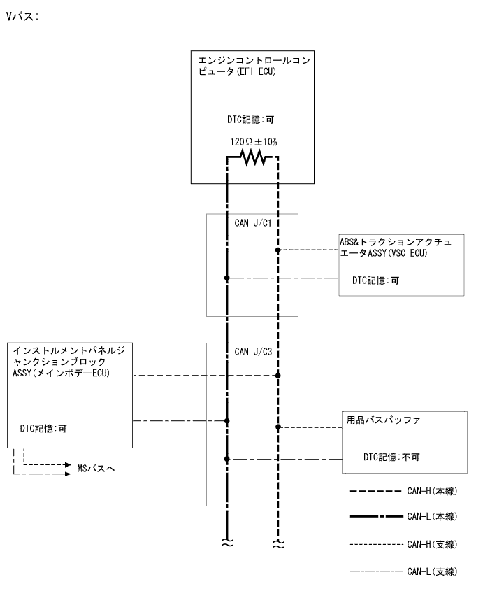
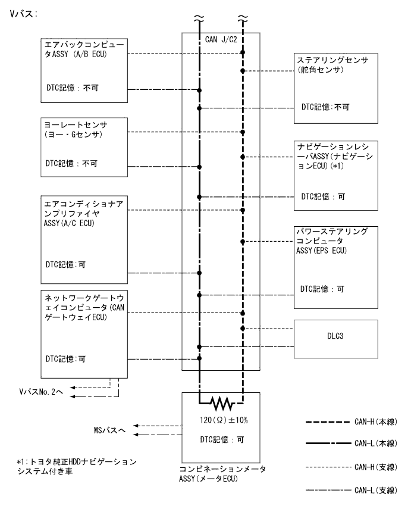
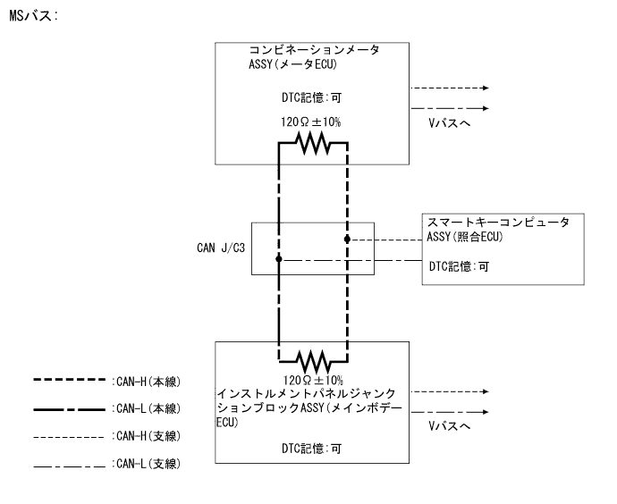
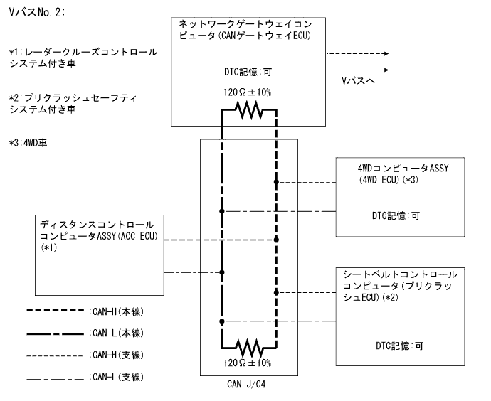

CAN Communication System Wiring Diagram
Print




□ HINT □
2WD models equipped with neither pre-crash safety nor radar cruise control have no V bus No.2 configuration and no CAN gateway ECU wiring.